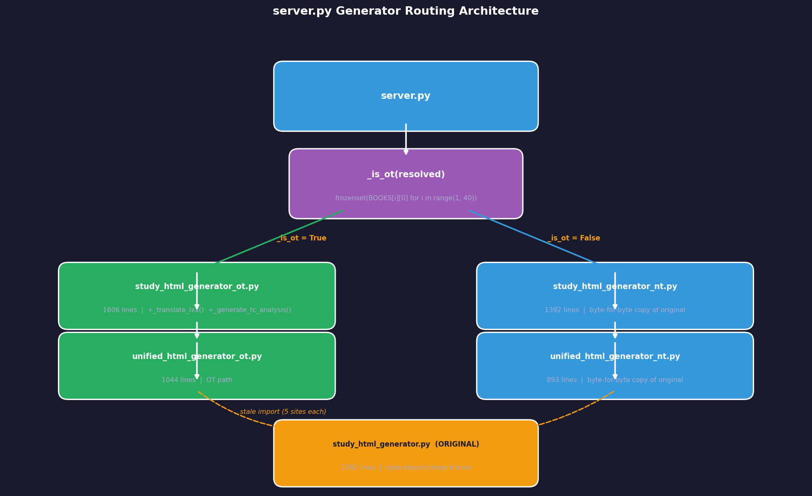
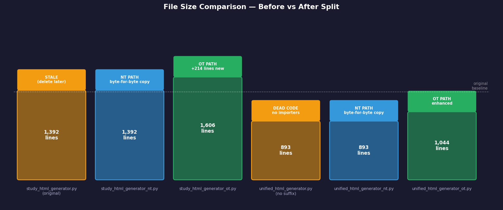
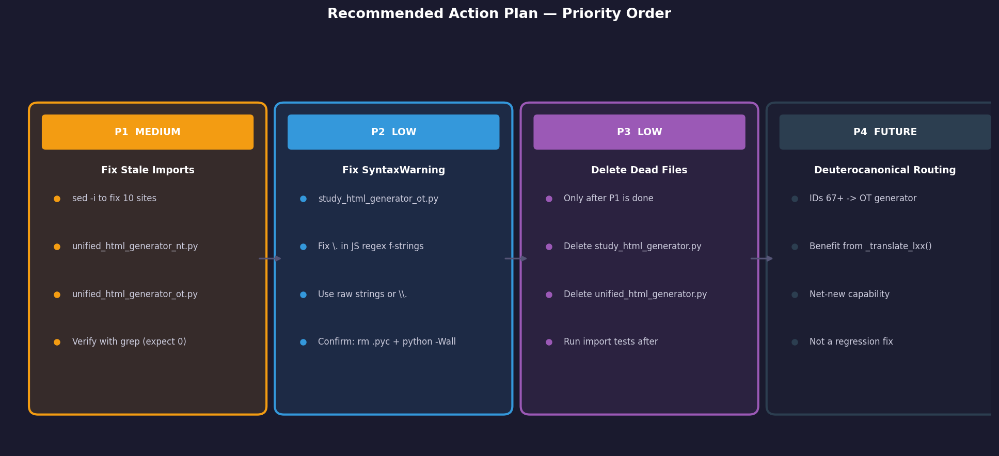

Investigation ID: v2-395459 · Date: 2026-06-14 · Verdict: ✅ Functionally Correct
The OT/NT generator split is working correctly. All imports resolve,
all function signatures match their call sites in
server.py, and the _is_ot() routing logic
correctly classifies all 66 canonical books (IDs 1–39 = OT, 40–66 = NT).
The NT generator is a byte-for-byte copy of the pre-split original and
behaves identically to the known-good May 12 state.
Three hygiene issues exist — none affect runtime
correctness. The most important is a set of 10 stale import
sites in both unified generators that still point to the original
study_html_generator.py. The system works today because the
original still exists, but it must be fixed before that file can be
safely deleted.

| ID | Finding | Confidence |
|---|---|---|
| F1 | All 6 imports from _nt and _ot generators
resolve at runtime |
HIGH |
| F2 | _is_ot() uses
frozenset(BOOKS[i][0] for i in range(1, 40)) — IDs 1–39 =
OT |
HIGH |
| F3 | generate_unified_html(book, chapter, chapter_data, output_dir)
matches server.py call |
HIGH |
| F4 | study_html_generator_nt.py is byte-for-byte copy of
original (1392 lines) |
HIGH |
| F5 | study_html_generator_ot.py is 1606 lines — +214 lines
with _translate_lxx() + TC analysis |
HIGH |
| F6 | unified_html_generator_nt.py is byte-for-byte copy of
original (893 lines) |
HIGH |
| F7 | 10 stale import sites in both unified generators still point to original — MEDIUM issue | HIGH |
| F8 | _s3_cache_get, _s3_cache_put,
_strip_md are byte-identical across all 3 source files |
HIGH |
| F9 | SyntaxWarning for \. in OT generator is
real but cosmetic — suppressed by __pycache__ |
HIGH |
| F10 | server.py has zero imports from
original study_html_generator — all use
_ot/_nt |
HIGH |
| F11 | Deuterocanonical books (IDs 67+) route to NT generator — same as pre-split | HIGH |
| F12 | No circular imports exist in the dependency chain | HIGH |

study_html_generator.py (1392 lines) — original; still alive due to stale imports
study_html_generator_nt.py (1392 lines) — byte-for-byte copy; NT path
study_html_generator_ot.py (1606 lines) — enhanced: +_translate_lxx(), +_generate_tc_analysis()
unified_html_generator.py ( 893 lines) — dead code; no importers in server.py
unified_html_generator_nt.py ( 893 lines) — byte-for-byte copy; NT path
unified_html_generator_ot.py (1044 lines) — enhanced; OT path| ID | Conflict | Resolution |
|---|---|---|
| C1 | Contrarian claimed line counts 1268/1469/801/942 — accused investigator of fabrication | Judge ran wc -l independently. Investigator’s counts
(1392/1606/893/1044) are correct at HEAD. Fabrication claim
retracted. |
| C2 | Pair 1 flagged stale imports as CRITICAL. Pairs 0 & 2 said MEDIUM. | Judge downgraded to MEDIUM — system functions
today; risk is latent, triggered only on deleting the original. Fix is
two sed commands. |
| C3 | Contrarian: routing deuterocanonicals to NT is a design gap (missing
_translate_lxx()) |
Not a regression — _translate_lxx() didn’t exist
pre-split. Deuterocanonicals get identical code path as before. Future
enhancement, not a bug. |
| C4 | Contrarian challenged “runtime test” vs “static analysis” distinction | Investigator conceded; conclusions unaffected. All 6 imports verified to resolve by both methods. |

sed -i '' 's/from study_html_generator import/from study_html_generator_nt import/g' unified_html_generator_nt.py
sed -i '' 's/from study_html_generator import/from study_html_generator_ot import/g' unified_html_generator_ot.py
# Verify — should return empty:
grep "from study_html_generator import" unified_html_generator_nt.py unified_html_generator_ot.pyThe \. sequences appear in JavaScript regex strings
embedded in Python f-strings. CPython 3.12+ (PEP 701) misreports the
line numbers (reports 1611/1615 for a 1606-line file). Fix with raw
strings or \\..
# Reproduce:
rm -f __pycache__/study_html_generator_ot.cpython-*.pyc
python3 -Wall -c "import study_html_generator_ot" 2>&1 | grep SyntaxWarningOnce stale imports are fixed and tests pass, delete:
rm study_html_generator.py
rm unified_html_generator.pyConsider expanding _OT_NAMES to include
deuterocanonical/pseudepigraphal books (IDs 67+) so they benefit from
_translate_lxx() in the OT generator.
| Aspect | Status |
|---|---|
server.py imports from _nt/_ot only |
✅ Confirmed |
_is_ot() classifies all 66 books correctly |
✅ Confirmed |
| NT generator function signatures match | ✅ Confirmed |
| OT generator function signatures match | ✅ Confirmed |
| No circular imports | ✅ Confirmed |
unified_html_generator_nt.py signature correct |
✅ Confirmed |
Original study_html_generator.py NOT used by
server.py |
✅ Confirmed |
| Stale imports in unified generators | ⚠️ MEDIUM (fixable in ~2 min) |
| SyntaxWarning in OT generator | ⚠️ LOW (cosmetic only) |
| Dead code files can be deleted | ⏳ After P1 fix |
| Source | Contribution |
|---|---|
| Pair 0 — internal-investigator | Import integrity, circular import analysis, _s3_cache identity |
| Pair 1 — docs-investigator | Critical stale-import discovery, byte-for-byte file identity, deuterocanonical routing |
| Pair 2 — bug-repro-agent | Runtime import verification, function signature table, OT-specific extras |
| Judge | Line count arbitration, severity downgrade C→M, CPython SyntaxWarning reproduction |